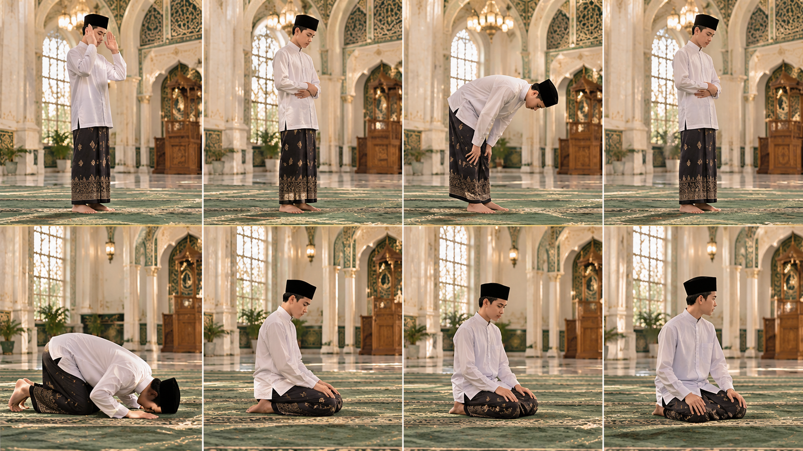

Tata Cara Sholat

Yang dimaksud dengan rukun shalat adalah setiap perkataan atau perbuatan yang akan membentuk hakikat shalat. Jika salah satu rukun ini tidak ada, maka shalat pun tidak teranggap secara syar’i dan juga tidak bisa diganti dengan sujud sahwi.
Meninggalkan rukun shalat ada dua bentuk.
Pertama: Meninggalkannya dengan sengaja. Dalam kondisi seperti ini shalatnya batal dan tidak sah dengan kesepakatan para ulama.
Kedua: Meninggalkannya karena lupa atau tidak tahu. Di sini ada tiga rincian,
1. Jika mampu untuk mendapati rukun tersebut lagi, maka wajib untuk melakukannya kembali. Hal ini berdasarkan kesepakatan para ulama.
2. Jika tidak mampu mendapatinya lagi, maka shalatnya batal menurut ulama-ulama Hanafiyah. Sedangkan jumhur ulama (mayoritas ulama) berpendapat bahwa raka’at yang ketinggalan rukun tadi menjadi hilang.
3. Jika yang ditinggalkan adalah takbiratul ihram, maka shalatnya harus diulangi dari awal lagi karena ia tidak memasuki shalat dengan benar.
Rukun pertama: Berdiri bagi yang mampu
Nabi shallallahu ‘alaihi wa sallam bersabda,
صَلِّ قَائِمًا ، فَإِنْ لَمْ تَسْتَطِعْ فَقَاعِدًا ، فَإِنْ لَمْ تَسْتَطِعْ فَعَلَى جَنْبٍ
“Shalatlah dalam keadaan berdiri. Jika tidak mampu, kerjakanlah dalam keadaan duduk. Jika tidak mampu lagi, maka kerjakanlah dengan tidur menyamping.”[1]
Rukun kedua: Takbiratul ihram
Nabi shallallahu ‘alaihi wa sallam bersabda,
مِفْتَاحُ الصَّلاَةِ الطُّهُورُ وَتَحْرِيمُهَا التَّكْبِيرُ وَتَحْلِيلُهَا التَّسْلِيمُ
“Pembuka shalat adalah thoharoh (bersuci). Yang mengharamkan dari hal-hal di luar shalat adalah ucapan takbir. Sedangkan yang menghalalkannya kembali adalah ucapan salam. ”[2]
Yang dimaksud dengan rukun shalat adalah ucapan takbir “Allahu Akbar”. Ucapan takbir ini tidak bisa digantikan dengan ucapakan selainnya walaupun semakna.
Rukun ketiga: Membaca Al Fatihah di Setiap Raka’at
Nabi shallallahu ‘alaihi wa sallam bersabda,
لاَ صَلاَةَ لِمَنْ لَمْ يَقْرَأْ بِفَاتِحَةِ الْكِتَابِ
“Tidak ada shalat (artinya tidak sah) orang yang tidak membaca Al Fatihah.”[3]
Rukun keempat dan kelima: Ruku’ dan thuma’ninah
Nabi shallallahu ‘alaihi wa sallam pernah mengatakan pada orang yang jelek shalatnya (sampai ia disuruh mengulangi shalatnya beberapa kali karena tidak memenuhi rukun),
ثُمَّ ارْكَعْ حَتَّى تَطْمَئِنَّ رَاكِعًا
“Kemudian ruku’lah dan thuma’ninahlah ketika ruku’.”[4]
Keadaan minimal dalam ruku’ adalah membungkukkan badan dan tangan berada di lutut.
Sedangkan yang dimaksudkan thuma’ninah adalah keadaan tenang di mana setiap persendian juga ikut tenang. Sebagaimana Nabi shallallahu ‘alaihi wa sallam pernah mengatakan pada orang yang jelek shalatnya sehingga ia pun disuruh untuk mengulangi shalatnya, beliau bersabda,
لاَ تَتِمُّ صَلاَةُ أَحَدِكُمْ حَتَّى يُسْبِغَ … ثُمَّ يُكَبِّرُ فَيَرْكَعُ فَيَضَعُ كَفَّيْهِ عَلَى رُكْبَتَيْهِ حَتَّى تَطْمَئِنَّ مَفَاصِلُهُ وَتَسْتَرْخِىَ
“Shalat tidaklah sempurna sampai salah seorang di antara kalian menyempurnakan wudhu, … kemudian bertakbir, lalu melakukan ruku’ dengan meletakkan telapak tangan di lutut sampai persendian yang ada dalam keadaan thuma’ninah dan tenang.”[5]
Ada pula ulama yang mengatakan bahwa thuma’ninah adalah sekadar membaca dzikir yang wajib dalam ruku’.
Rukun keenam dan ketujuh: I’tidal setelah ruku’ dan thuma’ninah
Nabi shallallahu ‘alaihi wa sallam mengatakan pada orang yang jelek shalatnya,
ثُمَّ ارْفَعْ حَتَّى تَعْتَدِلَ قَائِمًا
“Kemudian tegakkanlah badan (i’tidal) dan thuma’ninalah.”[6]
Rukun kedelapan dan kesembilan: Sujud dan thuma’ninah
Nabi shallallahu ‘alaihi wa sallam mengatakan pada orang yang jelek shalatnya,
ثُمَّ اسْجُدْ حَتَّى تَطْمَئِنَّ سَاجِدًا
“Kemudian sujudlah dan thuma’ninalah ketika sujud.”[7]
Hendaklah sujud dilakukan pada tujuh bagian anggota badan: [1,2] Telapak tangan kanan dan kiri, [3,4] Lutut kanan dan kiri, [5,6] Ujung kaki kanan dan kiri, dan [7] Dahi sekaligus dengan hidung.
Rasulullah shallallahu ‘alaihi wa sallam bersabda,
أُمِرْتُ أَنْ أَسْجُدَ عَلَى سَبْعَةِ أَعْظُمٍ عَلَى الْجَبْهَةِ – وَأَشَارَ بِيَدِهِ عَلَى أَنْفِهِ – وَالْيَدَيْنِ ، وَالرُّكْبَتَيْنِ وَأَطْرَافِ الْقَدَمَيْنِ
“Aku diperintahkan bersujud dengan tujuh bagian anggota badan: [1] Dahi (termasuk juga hidung, beliau mengisyaratkan dengan tangannya), [2,3] telapak tangan kanan dan kiri, [4,5] lutut kanan dan kiri, dan [6,7] ujung kaki kanan dan kiri. ”
Rukun kesepuluh dan kesebelas: Duduk di antara dua sujud dan thuma’ninah
Nabi shallallahu ‘alaihi wa sallam bersabda,
ثُمَّ اسْجُدْ حَتَّى تَطْمَئِنَّ سَاجِدًا ، ثُمَّ ارْفَعْ حَتَّى تَطْمَئِنَّ جَالِسًا ، ثُمَّ اسْجُدْ حَتَّى تَطْمَئِنَّ سَاجِدًا
“Kemudian sujudlah dan thuma’ninalah ketika sujud. Lalu bangkitlah dari sujud dan thuma’ninalah ketika duduk. Kemudian sujudlah kembali dan thuma’ninalah ketika sujud.”[8]